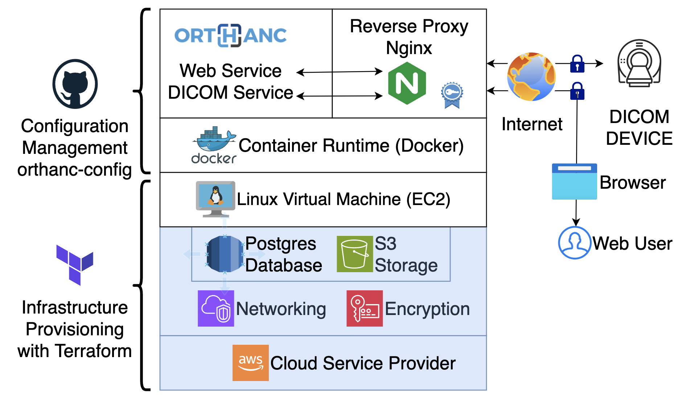

Orthweb - Orthanc Solution on AWS


Overview
The Orthweb project automates the creation of a cloud-based mini-PACS based on Orthanc and Amazon Web Services (AWS). The project artifact addresses the cloud foundation and configuration management, and enables adopters to host the Orthanc software as a service (SaaS). To get started, follow the documentation. 💪 Let's automate medical imaging!
Imaging systems handling sensitive data must operate on secure platforms. Typically, large organizations dedicate specialized IT resources to build their enterprise-scale cloud foundations. This cloud foundation, also known as a landing zone, addresses security and scalability. Each line of business of the large organization is allocated with a segment (e.g. an VPC) in the landing zone, to deploy their own applications.
However, many Orthanc adopters are small teams without overarching cloud strategies from their parent organizations. They are startups, research groups, independent clinics, and so on. To leverage Orthanc capabilities, they need simple cloud foundations that are equally secure and scalable. To close this gap, we proposed and implemnted a cloud-based Orthanc solution: the Orthweb project.

To build the foundation fast, Orthweb project uses Terraform template (an infrastructure-as-code technology) to provision a self-contained infrastrcture stack in a single AWS account, without relying upon established network infrastructure. The infrastructure layer provisioned in this project contains a single VPC with multiple subnets, along with optional VPC endpoints. The infrastructure layer also contains encryption keys, managed database service and S3 storage.
The Orthweb project also streamlines the configuration of Orthanc solution, by proposing a paradign for Orthanc configuration management. The project leverages cloud-init user data and makefile to configure the servers during the server's initialization process. The artifact to install Orthanc is stored in a separate repository for adopters to fork and customize. The orthanc-config repository is a good example.
The project orchestrates the application containers with Docker daemon on EC2 instances. Technical users can expect to build a cloud-based mini-PACS in one hour with rich feature, scalability and security. For those considering hosting Orthanc on Kubernetes, check out the sister project Korthweb.